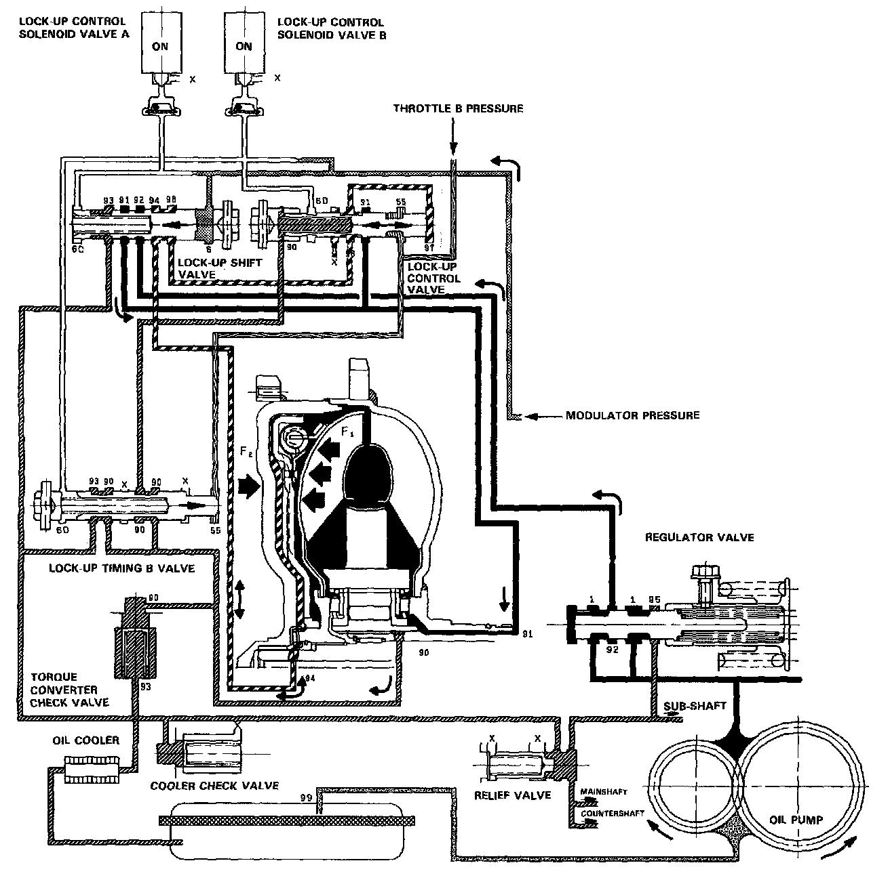

Half Lock-Up
HALF LOCK-UP
Lock-up Control Solenoid Valve A: ON Lock-up Control Solenoid Valve B: ON
The modulator pressure is released by the solenoid valve B, causing the modulator pressure in the left cavity of the lockup control valve to lower.
Also the modulator pressure in the left cavity of the lock-up timing B valve is low. However the throttle B pressure is still low at this time; consequently. the lock-up timing B valve is kept on the right side by the spring force. With the lock-up control solenoid valve B turned on, the lock-up control valve is moved somewhat to the left side, causing the back pressure (F2) to lower. This allows a greater amount of the fluid (F1) to work on the lock-up clutch so as to engage the clutch. The back pressure (F2) which still exists prevents the clutch from engaging fully.
NOTE: When used, "left" or "right" indicates direction on the flowchart.